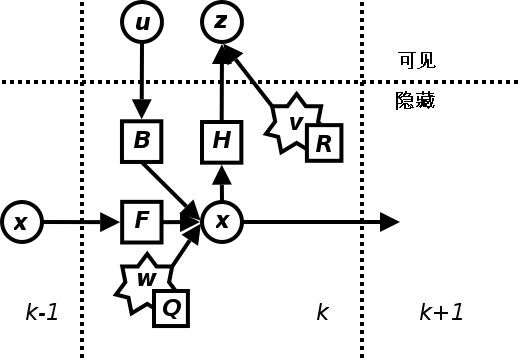

3,039 words in total, 12 minutes required. Kalman Filter (KF) 是一个高效的递归滤波器，它可以实现从一系列的噪声测量中，估计动态系统的状态。 1. 应用实例一个简单的应用是估计物体的位置和速度；简要描述如下：假设我们可以获取一个物体的包含噪声的一系列位置观测数据，我们可以获得此物体的精确速度和位置连续更新信息。 例如，对于雷达来说，我们关心的是跟踪目标，而目标的位置，速度，加速度的测量值是时刻含有误差的，卡尔曼滤波器利用目标的动态信息，去掉噪声影响，获取目标此刻好的位置估计(滤波)，将来位置估计(预测)，也可以是过去位置估计的(插值或平滑)。 2. 命名和发展历史这个滤波器以它的发明者Rudolf.E.Kalman（2016年去世，向这位传奇的科学家致敬）而命名。 在控制领域，Kalman滤波被称为线性二次型估计，目前,卡尔曼滤波已经有很多不同的实现，有施密特扩展滤波器、信息滤波器以及一系列的Bierman和Thornton发明的平方根滤波器等，而卡尔曼最初提出的形式现在称为简单卡尔曼滤波器。也许最常见的卡尔曼滤波器应用是锁相环，它在收音机、计算机和几乎全部视频或通讯设备中广泛存在。 3. 卡尔曼滤波器的举例介绍假设我们要研究的对象是一个房间的温度。根据你的经验判断，这个房间的温度是恒定的，也就是下一分钟的温度等于现在这一分钟的温度（假设我们用一分钟来做时间单位）。 假设你对你的经验不是绝对相信，可能会有上下偏差几度。我们把这些偏差看成是高斯白噪声 (White Gaussian Noise， 理想情况下我们以高斯噪声来进行假设估计)，也就是这些偏差跟前后时间是没有关系的而且符合高斯分配（Gaussian Distribution）。 另外，我们在房间里放一个温度计，但是这个温度计也不准确的，测量值会比实际值偏差。我们也把这些偏差看成是高斯白噪声。好了，现在对于某一分钟我们有两个有关于该房间的温度值：你根据经验的预测值（系统的预测值）和温度计的值（测量值）。下面我们要用这两个值结合他们各自的噪声来估算出房间的实际温度值。 假如我们要估算 $ k $ 时刻的实际温度值。首先你要根据 $ k-1 $ 时刻的温度值，来预测 $ k $ 时刻的温度。因为你相信温度是恒定的，所以你会得到 $ k $ 时刻的温度预测值是跟 $ k-1 $ 时刻一样的，假设是23度，同时该值的高斯噪声的偏差是5度（5是这样得到的：如果 $ k-1 $ 时刻估算出的最优温度值的偏差是3，你对自己预测的不确定度是4度，他们平方相加再开方就是5）。 然后，你从温度计那里得到了 $ k $ 时刻的温度值，假设是25度，同时该值的偏差是4度。 由于我们用于估算 $ k $ 时刻的实际温度有两个温度值，分别是23度和25度。究竟实际温度是多少呢？相信自己还是相信温度计呢？究竟相信谁多一点，我们可以用他们的covariance (协方差) 来判断。因为 $ Kg^2= 5^2 / (5^2 + 4^2) $，所以 $ Kg = 0.78 $，我们可以估算出 $ k $ 时刻的实际温度值是： $ 23 + 0.78 * (25-23) = 24.56 $度。可以看出，因为温度计的covariance比较小（比较相信温度计），所以估算出的最优温度值偏向温度计的值。 现在我们已经得到 $ k $ 时刻的最优温度值了，下一步就是要进入 $ k+1 $ 时刻，进行新的最优估算。到现在为止，好像还没看到什么自回归的东西出现。对了，在进入 $ k+1 $ 时刻之前，我们还要算出 $ k $ 时刻那个最优值（24.56度）的偏差。算法如下：$ ((1-Kg)*5^2)^{0.5} = 2.35 $。这里的5就是上面的 $ k $ 时刻你预测的那个23度温度值的偏差，得出的2.35就是进入 $ k+1 $ 时刻以后 $ k $ 时刻估算出的最优温度值的偏差（对应于上面的3）。 就是这样，卡尔曼滤波器就不断的把covariance递归，从而估算出最优的温度值。他运行的很快，而且它只保留了上一时刻的covariance。上面的 $ Kg $，就是卡尔曼增益（Kalman Gain），可以随不同的时刻而改变自己的值。 4. 卡尔曼滤波器算法卡尔曼滤波基于时域描述的线性动态系统，它的模型是Markov Chain，而Markov Chain建立在一个被高斯噪声干扰的线性算子之上。系统的状态可以用一个元素为实数的向量表示。 随着离散时间的增加，这个线性算子就会作用到当前状态之上，产生一个新的状态，并且会带入一定的噪声，同时一些已知的控制信息也会加入。同时另外一个受噪声干扰的线性算子将产生这些隐含状态的可见输出。Kalman 滤波可以被看作为类似隐马尔科夫模型，它们的显著不同点在于：隐状态变量的取值空间是一个连续的空间，而离散状态空间则不是；另为，隐马尔科夫模型可以描述下一个状态的一个任意分布，这也与应用于Kalman滤波器中的高斯噪声模型相反。 先看一下动态系统的基本模型。 动态模型 首先，我们先要引入一个离散控制过程的系统。该系统可用一个线性随机微分方程（Linear Stochastic Difference equation）来描述： $ X(k) = \mathbf{A} \cdot X(k-1) + \mathbf{B} \cdot U(k) + W(k) $ 这里我们用 $ \mathbf{A} $ 来替代上图中的 $ \mathbf{F} $，再加上系统的测量值： $ Z(k) = \mathbf{H} \cdot X(k) + V(k) $ 上两式子中，$ X(k) $ 是 $ k $ 时刻的系统状态，$ U(k) $ 是 $ k $ 时刻对系统的控制量。 $ \mathbf{A} $ 和 $ \mathbf{B} $是系统参数，对于多模型系统，他们为转移矩阵。 $ Z(k) $ 是 $ k $ 时刻的测量值，$ \mathbf{H} $ 是测量系统的参数，对于多测量系统，$ \mathbf{H} $ 为矩阵。$ W(k) $ 和 $ V(k) $ 分别表示过程和测量的噪声。他们被假设成高斯白噪声(White Gaussian Noise)，他们的covariance分别是 $ \mathbf{Q} $ ， $ \mathbf{R} $ （这里我们假设他们不随系统状态变化而变化）。 卡尔曼滤波是一种递归的估计，即只要获知上一时刻状态的估计值以及当前状态的观测值就可以计算出当前状态的估计值，因此不需要记录观测或者估计的历史信息。卡尔曼滤波器与大多数滤波器不同之处，在于它是一种纯粹的时域滤波器，它不需要像低通滤波器等频域滤波器那样，需要在频域设计再转换到时域实现。 卡尔曼滤波器的操作包括两个阶段：预测与更新。 在预测阶段，滤波器使用上一状态的估计，做出对当前状态的估计。 在更新阶段，滤波器利用对当前状态的观测值优化在预测阶段获得的预测值，以获得一个更精确的新估计值。 4.1 预测阶段对于满足上面的条件(线性随机微分系统，过程和测量都是高斯白噪声)，卡尔曼滤波器是最优的信息处理器。下面我们来用他们结合他们的covariances来估算系统的最优化输出（类似上一节那个温度的例子）。首先我们要利用系统的过程模型，来预测下一状态的系统。假设现在的系统状态是 $ k $ ，根据系统的模型，可以基于系统的上一状态而预测出现在状态： $ X(k|k-1) = \mathbf{A} \cdot X(k-1|k-1) + \mathbf{B} \cdot U(k) $ 上述公式称为【预测的状态估计方程】，其中，$ X(k|k-1) $ 是利用上一状态预测的结果，$ X(k-1|k-1) $ 是上一状态最优的结果，$ U(k) $ 为现在状态的控制量，如果没有控制量，它可以为0。 到现在为止，我们的系统结果已经更新了，可是，对应于 $ X(k|k-1) $ 的covariance还没更新。我们用 $ P $ 表示covariance，它实际上描述了度量估计值的准确程度： $ P(k|k-1) = \mathbf{A} \cdot P(k-1|k-1) \cdot \mathbf{A}^T + \mathbf{Q}_k $ 上述公式称为【预测的协方差矩阵估计方程】，其中，$ P(k|k-1) $ 是 $ X(k|k-1) $ 对应的covariance，$ P(k-1|k-1) $ 是 $ X(k-1|k-1) $ 对应的covariance，$ \mathbf{A}^T $ 表示$ \mathbf{A} $的转置矩阵，$ \mathbf{Q} $ 是系统过程的covariance。上述两个公式就是对系统的预测。 4.2 更新阶段在进行更新之前，我们先计算三个值： 首先是测量余量 (measurement residual)： $ y(k) = Z(k)- \mathbf{H} \cdot X(k|k-1) $ 因为测量过程中存在一个测量误差的协方差矩阵，我们可以给出一个测量余量的协方差： $ S(k) = \mathbf{H}_k \cdot P(k|k-1) \cdot \mathbf{H}_k^T + \mathbf{R}_k $ 接下来给出一个卡尔曼增益(Kalman Gain)： $ Kg(k) = P(k|k-1) \cdot \mathbf{H}^T \cdot S(k)^{-1} = P(k|k-1) \cdot \mathbf{H}^T \cdot ( \mathbf{H} \cdot P(k|k-1) \cdot \mathbf{H}^T + \mathbf{R}_k )^{-1} $ 现在我们有了现在状态的预测结果，然后我们再收集现在状态的测量值。结合预测值和测量值，我们可以得到现在状态 $ k $ 的最优化估算值 $ X(k|k) $： $ X(k|k) = X(k|k-1) + Kg(k) \cdot y(k) $ 上述方程为【更新的状态估计方程】。 到现在为止，我们已经得到了 $ k $ 状态下最优的估算值 $ X(k|k) $。但是为了要使得卡尔曼滤波器不断的运行下去直到系统过程结束，我们还要更新 $ k $ 状态下 $ X(k|k) $ 的covariance： $ P(k|k) = ( \mathbf{I} - Kg(k) \cdot \mathbf{H}) \cdot P(k|k-1) $ 上述方程成为【更新的协方差矩阵估计方程】，其中$ \mathbf{I} $ 为1的矩阵，对于单模型单测量，$ \mathbf{I} = 1 $。当系统进入 $ k+1 $ 状态时，$ P(k|k) $ 就是预测方程中的 $ P(k-1|k-1) $。这样，算法就可以自回归的运算下去。 5. 示例代码给出一个matlab版本的小程序。 1234567891011121314151617181920212223242526272829303132N=200;w(1)=0;w=randn(1,N) % White Gaussian Noise of Predictionx(1)=25;a=1; % prediction parameterfor k=2:N;x(k)=a*x(k-1)+w(k-1);endxV=randn(1,N); % White Gaussian Noise of Measurementq1=std(V);Rvv=q1.^2; % covariance of Measurementq2=std(x);Rxx=q2.^2;q3=std(w);Rww=q3.^2; % covariance of predictionc=0.2; % measurement parameterY=c*x+V;p(1)=10; % initial prediction results(1)=26; % initial optimal resultfor t=2:N;p1(t)=a.^2*p(t-1)+Rww; % covariance of t-1b(t)=c*p1(t)/(c.^2*p1(t)+Rvv); % kalman gains(t)=a*s(t-1)+b(t)*(Y(t)-a*c*s(t-1)); % optimal resultp(t)=p1(t)-c*b(t)*p1(t); % covariance of tendt=1:N;plot(t,s,'r',t,Y,'g',t,x,'b'); 引用[1] http://carpa.bokee.com/4725695.html[2] http://internetbuff.blog.163.com/blog/static/9425110720091501413932/[3] http://en.wikipedia.org/wiki/Kalman_filtering ← Previous Post Next Post→ To show LiveRe comment, please use JavaScript Table of Contents 1. 应用实例2. 命名和发展历史3. 卡尔曼滤波器的举例介绍4. 卡尔曼滤波器算法4.1 预测阶段4.2 更新阶段5. 示例代码引用